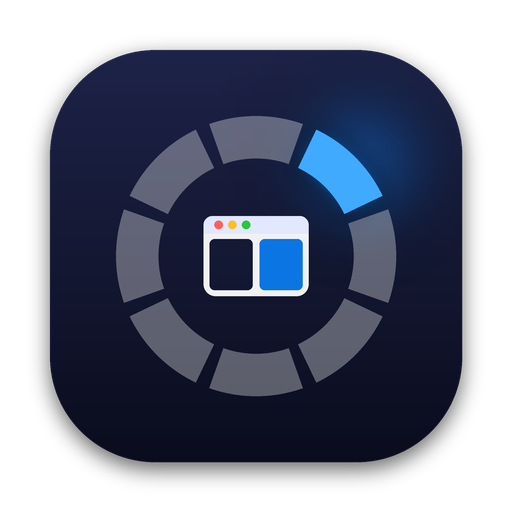

Flick windows
into place.
Hold Option, flick the mouse toward where a window should go, and let go. Swoop is a free, open-source window manager for macOS that you can use without looking.
Free and open source. macOS 13+, Apple silicon and Intel.
Try it: hold ⌥ Option and move your mouse, then let go. Click while holding to cycle. Try it: press and hold the screen, slide toward a spot, then lift.
One gesture. No targets to aim at.
-
Hold
Hold Left ⌥ Option. A ring appears right under your cursor, so your eyes never leave your work.
-
Flick
Nudge the mouse toward where the window belongs. An outline shows exactly where it will land. Click to step through sizes: half, third, two thirds.
-
Release
Let go and the window swoops into place. Esc or right-click cancels.
Install in a minute
The one-liner is the quickest. The download takes a few extra clicks the first time, and each one is shown below.
Quickest: one line in Terminal
Paste this into Terminal and press Return. It puts the latest Swoop in Applications and opens it, with no security popup.
curl -fsSL https://swoop-mac.vercel.app/install.sh | bash
Want to check it first? Read the script, it's 40 lines.
Or download the app
Download Swoop.zip, unzip it and drag Swoop into Applications. Then follow these steps the first time you open it.
-
Click Done
macOS shows this the first time. It's normal for free apps outside the App Store. Click Done, not Move to Trash.
-
Open Anyway
Open System Settings → Privacy & Security, scroll to the bottom and click Open Anyway. On macOS 13 or 14 you can right-click Swoop and choose Open instead.
-
Confirm
Use your password or Touch ID, then click Open Anyway again. You only do this once.
-
Allow Accessibility
When Swoop asks, turn it on in Privacy & Security → Accessibility. No restart needed.
-
Hold ⌥ and flick
Click any window, hold the Option key left of the spacebar, move the mouse where the window should go, and let go.
Why the warning? Apple only skips that popup for apps in its $99-a-year developer program, which Swoop hasn't joined yet. It doesn't mean anything was found. Every line of Swoop is on GitHub, each release is built in public, it never goes online, and it asks for one permission: Accessibility.
Every layout, one flick or keypress away
Put any of these on any direction of the ring or on any key, or make your own.
- Screens. Send a window to the next display. It keeps its layout and the cursor comes along.
- Stash. Tuck a window behind the screen edge. Push the cursor against the edge to slide it back.
- Resize and nudge. Larger, smaller, grow or shrink any edge, move in any direction.
- Undo. Step back through a window's last positions.
Prefer the keyboard? Hold ⌥ and tap.
Press the same key again to cycle. Every key can be changed in Settings.
- ←→↑↓
- Halves, then thirds, then two thirds
- ↩
- Maximize, then almost maximize
- C
- Centre
- 1234
- Quarters
- []
- Previous and next screen
- =−
- Larger and smaller
- ,./
- Stash left, stash right, unstash
- Z
- Undo
Questions
Is Swoop really free?
Yes. It's open source under the MIT license, with no account, no subscription and no tracking. Swoop never connects to the internet.
Why does it need Accessibility permission?
macOS only lets apps move other apps' windows through Accessibility, so every window manager needs it. Swoop uses it for that and to notice your Option key, nothing else.
Will holding Option get in the way of typing?
Keys that aren't Swoop shortcuts type as normal, so ⌥ + E or ⌥ + U still make accents. While Option is held, Swoop's own keys (arrows, C, Z and a few more) move windows instead, so ⌥ + ← won't jump a word. If you use that a lot, switch the trigger to Right ⌥ or the 🌐 key in Settings → Trigger.
Can I change how it looks or which key triggers it?
Yes. Settings lets you pick the trigger key, the ring's size, shape and colour (it follows your macOS accent colour by default), the gap between windows, animation speed, and apps Swoop should ignore. You can also add your own layouts.
Can I control it from scripts, Shortcuts or Raycast?
Every action has a link, for example open -g "swoop://action/right-half" or swoop://screen/next. Run /Applications/Swoop.app/Contents/MacOS/Swoop --list to see them all.
How do I update or uninstall it?
To update, run the one-line installer again or replace the app with a new download. If shortcuts stop working after an update, switch Swoop off and on in Privacy & Security → Accessibility. To uninstall, quit Swoop from its menu bar icon and move it to the Trash.

Stop dragging windows around.
Download for MacFree and open source. Star it on GitHub or tell me what to build next.